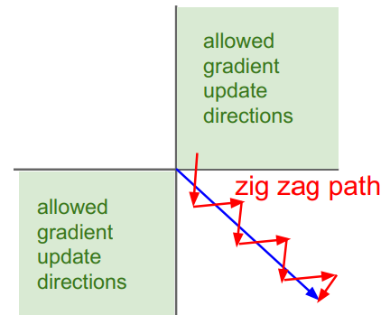
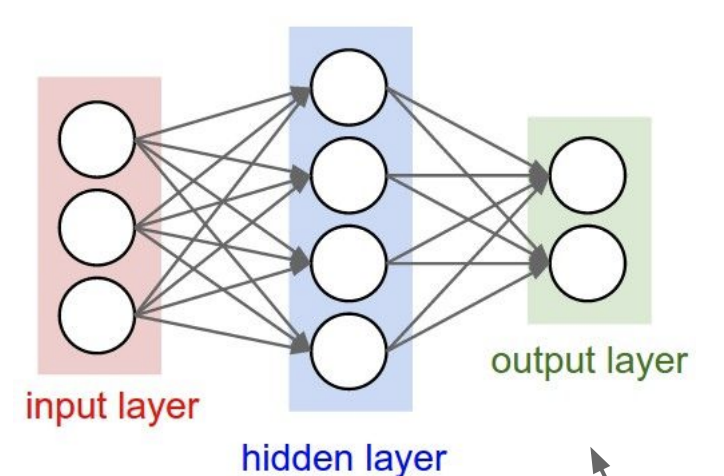

激活函数

Sigmoid函数
$\sigma(x) = \frac{1}{1 + e^{-x}}$
特征
最原始的激活函数，输出在$[0,1]$。
对神经元的激活具有很好的解释性：完全未激活为0，激活为1
缺点
导致梯度消失：导数($\sigma’(x)=\sigma(x)(1-\sigma(x))$) 最大值为0.25，当网络层数较深时，梯度在反向传播时传播不远会逐渐消失
值域不是零均值的：神经网络中接受来自前一层的输入全为正时，反向传播的梯度将会全部为正或全为负，导致梯度更新路径出现”zig zag”的情况。
exp()的计算有点大：这个不是很大的问题，只是相比ReLU确实慢一点
tanh(x)函数
特征
- 输出值域在[-1, 1]
- 零均值化
- 仍然存在梯度消失的问题
注：tanh(x)其实就是被缩放的sigmoid函数，$tanh(x) = 2\sigma(2x)-1$
ReLU函数
$f(x)=max(0,x)$
特征
- 不存在梯度消失问题
- 非常便于计算
- 收敛速度更快
- 相比sigmoid，在生物学上更具有可解释性
问题
- 不是零均值化的
- 较为脆弱：当学习率过大时，权重更新过了，成为一个小负数，神经元很容易“死亡”。比如说，如果有一个很大的梯度通过ReLU神经元，而如果你的学习率设置的也非常大，那么这就会导致你的权重被更新过头了，变成一个很小的负数。由于权重为负，那么如果输入的值为正数（一般都为正数），那么输出也为负数，经过ReLU函数后就变成了0，此时，反向传播时会发现该神经元的梯度为0，那么这个神经元的权值永远不会被更新。这种情况发生，那么该神经元的梯度将永远变为0。也就是说，在训练过程中，某些神经元可能会不可逆转地死亡。比如说，如果学习率设置过高，你会发现有大约40%的神经元死亡，当然用恰当的学习率可以使得这一情况很少发生。
Leaky ReLU
$f(x) = max(0.01, x)$
特征
- 解决ReLU导致神经元容易死亡的一种尝试
Maxout
$max(W_1^Tx+b_1,W_2^Tx+b_2)$
特征
- 是ReLU和Leaky ReLU的一般化版本
- 不会饱和，不会死亡
- 训练的参数会扩大两倍
激活函数的选择
- 通常使用ReLU。注意学习率的设置
- 尝试使用Leaky ReLU/Maxout/ELU
- 也可以尝试tanh，但不要抱太大期待
- 不要用sigmoid
数据处理（Preprocess the data）
零均值化 （Mean Subtraction）
对于每个特征属性，减去这个属性的平均值。
解释一：同激活函数的解释，避免梯度更新出现”zig zag path”
解释二：如下图所示：对于权值的微小变化不那么敏感，易于权值的更新与优化

# 注意：训练集、验证集、测试集都要减去训练集的平均值
mean_image = np.mean(X_train, axis = 0)
X_train -= mean_image
X_val -= mean_image
X_test -= mean_image
X_dev -= mean_image归一化（Normalization）
对数据维度进行归一化，使其具有大致相同的尺度
X /= np.std(X, asix = 0)注：对于图像处理而言，像素的相对尺度大致相等，一般不进行归一化处理。
PCA和白化（PCA and Whitening）

常见的误区：关于预处理的一个重要观点是，任何预处理的统计数据（如数据平均值）必须只在训练数据上计算，然后再应用于验证/测试数据。例如，计算整个数据集的平均值并将整个数据集中的每个像素都减去它，然后将数据分割成训练集、验证集、测试集，这是一个错误的做法。相反，应当只计算训练集中数据的平均值，然后在使用到验证集和测试集时减去训练集的平均值。
TODO 使用后附上代码
权值初始化（Weight Initialization）
常见的写法：
W = 0.01* np.random.randn(D,H)思考两个问题：
为什么要随机？不能是同一值，比如全部初始为0？
如果将所有权重初始化为同一值，则会得到相同的输出，在反向传播过程中，每个神经元都会具有相同的梯度，即神经元没有差异，具有对称性，不能学习到更多信息。
为什么要乘以一个小的系数，比如这里乘上0.01？
如果初始权值过大，可能会导致所有神经元在某些激活函数下完全饱和，梯度趋近于0。
Xavier initialization:
W = np.random.randn(fan_in, fan_out) / np.sqrt(fan_in)根据输入的方差等于输出的方差推导得到，Xavier intialization
ReLu激活函数的权值初始化
W = np.random.randn(fan_in, fan_out) / np.sqrt(fan_in / 2)直观的理解：对于ReLU激活函数，因为有一半神经元未被激活，所以除以2。具体见 Kaiming He。
批量归一化 （Batch Normalization）

优点：
- 有利于梯度在网络中流动
- 允许很高的正确率
- 降低了对初始化的依赖性
- 可以视为正则化的一种形式
TODO 使用后附上代码
两层神经网络训练过程
全连接层的实现
前向传播
def affine_forward(x, w, b):
"""
Computes the forward pass for an affine (fully-connected) layer.
The input x has shape (N, d_1, ..., d_k) and contains a minibatch of N
examples, where each example x[i] has shape (d_1, ..., d_k). We will
reshape each input into a vector of dimension D = d_1 * ... * d_k, and
then transform it to an output vector of dimension M.
Inputs:
- x: A numpy array containing input data, of shape (N, d_1, ..., d_k)
- w: A numpy array of weights, of shape (D, M)
- b: A numpy array of biases, of shape (M,)
Returns a tuple of:
- out: output, of shape (N, M)
- cache: (x, w, b)
"""
out = None
data_x = x.reshape(x.shape[0], -1)
out = data_x.dot(w) + b
cache = (x, w, b)
return out, cache后向传播
def affine_backward(dout, cache):
"""
Computes the backward pass for an affine layer.
Inputs:
- dout: Upstream derivative, of shape (N, M)
- cache: Tuple of:
- x: Input data, of shape (N, d_1, ... d_k)
- w: Weights, of shape (D, M)
- b: Biases, of shape (M,)
Returns a tuple of:
- dx: Gradient with respect to x, of shape (N, d1, ..., d_k)
- dw: Gradient with respect to w, of shape (D, M)
- db: Gradient with respect to b, of shape (M,)
"""
x, w, b = cache
dx, dw, db = None, None, None
data_x = x.reshape(x.shape[0], -1)
dx = np.dot(dout, w.T).reshape(*x.shape)
dw = np.dot(data_x.T, dout)
db = np.sum(dout, axis=0)
return dx, dw, dbReLU层的实现
前向传播
def relu_forward(x):
"""
Computes the forward pass for a layer of rectified linear units (ReLUs).
Input:
- x: Inputs, of any shape
Returns a tuple of:
- out: Output, of the same shape as x
- cache: x
"""
out = np.maximum(x, 0.0)
cache = x
return out, cache反向传播
def relu_backward(dout, cache):
"""
Computes the backward pass for a layer of rectified linear units (ReLUs).
Input:
- dout: Upstream derivatives, of any shape
- cache: Input x, of same shape as dout
Returns:
- dx: Gradient with respect to x
"""
dx, x = None, cache
dx = dout
dx[x < 0] = 0
return dxInline Question 1:
We’ve only asked you to implement ReLU, but there are a number of different activation functions that one could use in neural networks, each with its pros and cons. In particular, an issue commonly seen with activation functions is getting zero (or close to zero) gradient flow during backpropagation. Which of the following activation functions have this problem? If you consider these functions in the one dimensional case, what types of input would lead to this behaviour?
- Sigmoid
- ReLU
- Leaky ReLU
Answer:
- Sigmoid可能会在后向传播中使梯度消失，因为$\sigma’(v) = \sigma(v)*(1-\sigma(v))$。最大值为$\frac{1}{4}$，在后向传播过程中，随着层数的加深，梯度每次衰减$\frac{1}{4}$，传播几层后就趋近于0。
- 对于sigmoid函数如果输入的值绝对值大，则容易导致梯度消失；对于ReLU、Leaky ReLU函数如果输入的值小于0则容易导致梯度消失。
Loss层的实现
softmax loss
def softmax_loss(x, y):
"""
Computes the loss and gradient for softmax classification.
Inputs:
- x: Input data, of shape (N, C) where x[i, j] is the score for the jth
class for the ith input.
- y: Vector of labels, of shape (N,) where y[i] is the label for x[i] and
0 <= y[i] < C
Returns a tuple of:
- loss: Scalar giving the loss
- dx: Gradient of the loss with respect to x
"""
loss, dx = None, None
num = x.shape[0]
scores = x - np.max(x, axis=1).reshape(-1, 1)
scores = np.exp(scores)
sum_scores = np.sum(scores, axis=1, keepdims=True)
softmax = scores / sum_scores
loss = np.sum(-np.log(softmax[np.arange(num), y])) / num
dx = softmax.copy()
dx[np.arange(num), y] -= 1
dx /= num
return loss, dxsvm loss
def svm_loss(x, y):
"""
Computes the loss and gradient using for multiclass SVM classification.
Inputs:
- x: Input data, of shape (N, C) where x[i, j] is the score for the jth
class for the ith input.
- y: Vector of labels, of shape (N,) where y[i] is the label for x[i] and
0 <= y[i] < C
Returns a tuple of:
- loss: Scalar giving the loss
- dx: Gradient of the loss with respect to x
"""
loss, dx = None, None
num = x.shape[0]
correct_x = x[np.arange(num), y].reshape((num, -1))
margin = x - correct_x + 1.0
margin[np.arange(num), y] = 0.0
margin = np.maximum(margin, 0.0)
loss = np.sum(margin) / num
dx = np.zeros_like(x)
num_pos = np.sum(margin > 0, axis=1)
dx[margin > 0] = 1
dx[np.arange(num), y] -= num_pos
dx = dx / num
return loss, dx网络搭建
from builtins import range
from builtins import object
import numpy as np
from ..layers import *
from ..layer_utils import *
class TwoLayerNet(object):
"""
A two-layer fully-connected neural network with ReLU nonlinearity and
softmax loss that uses a modular layer design. We assume an input dimension
of D, a hidden dimension of H, and perform classification over C classes.
The architecure should be affine - relu - affine - softmax.
Note that this class does not implement gradient descent; instead, it
will interact with a separate Solver object that is responsible for running
optimization.
The learnable parameters of the model are stored in the dictionary
self.params that maps parameter names to numpy arrays.
"""
def __init__(
self,
input_dim=3 * 32 * 32,
hidden_dim=100,
num_classes=10,
weight_scale=1e-3,
reg=0.0,
):
"""
Initialize a new network.
Inputs:g the size of the hidden layer
- num_classes: An integer givi
- input_dim: An integer giving the size of the input
- hidden_dim: An integer givinng the number of classes to classify
- weight_scale: Scalar giving the standard deviation for random
initialization of the weights.
- reg: Scalar giving L2 regularization strength.
"""
self.params = {}
self.reg = reg
############################################################################
# TODO: Initialize the weights and biases of the two-layer net. Weights #
# should be initialized from a Gaussian centered at 0.0 with #
# standard deviation equal to weight_scale, and biases should be #
# initialized to zero. All weights and biases should be stored in the #
# dictionary self.params, with first layer weights #
# and biases using the keys 'W1' and 'b1' and second layer #
# weights and biases using the keys 'W2' and 'b2'. #
############################################################################
# *****START OF YOUR CODE (DO NOT DELETE/MODIFY THIS LINE)*****
self.params['W1'] = np.random.normal(loc=0.0, scale=weight_scale, size=(input_dim, hidden_dim))
self.params['b1'] = np.zeros(hidden_dim)
self.params['W2'] = np.random.normal(loc=0.0, scale=weight_scale, size=(hidden_dim, num_classes))
self.params['b2'] = np.zeros(num_classes)
# *****END OF YOUR CODE (DO NOT DELETE/MODIFY THIS LINE)*****
############################################################################
# END OF YOUR CODE #
############################################################################
def loss(self, X, y=None):
"""
Compute loss and gradient for a minibatch of data.
Inputs:
- X: Array of input data of shape (N, d_1, ..., d_k)
- y: Array of labels, of shape (N,). y[i] gives the label for X[i].
Returns:
If y is None, then run a test-time forward pass of the model and return:
- scores: Array of shape (N, C) giving classification scores, where
scores[i, c] is the classification score for X[i] and class c.
If y is not None, then run a training-time forward and backward pass and
return a tuple of:
- loss: Scalar value giving the loss
- grads: Dictionary with the same keys as self.params, mapping parameter
names to gradients of the loss with respect to those parameters.
"""
scores = None
############################################################################
# TODO: Implement the forward pass for the two-layer net, computing the #
# class scores for X and storing them in the scores variable. #
############################################################################
# *****START OF YOUR CODE (DO NOT DELETE/MODIFY THIS LINE)*****
out1, cache1 = affine_forward(X, self.params['W1'], self.params['b1'])
relu1, cache_relu = relu_forward(out1)
out2, cache2 = affine_forward(relu1, self.params['W2'], self.params['b2'])
scores = out2
# *****END OF YOUR CODE (DO NOT DELETE/MODIFY THIS LINE)*****
############################################################################
# END OF YOUR CODE #
############################################################################
# If y is None then we are in test mode so just return scores
if y is None:
return scores
loss, grads = 0, {}
############################################################################
# TODO: Implement the backward pass for the two-layer net. Store the loss #
# in the loss variable and gradients in the grads dictionary. Compute data #
# loss using softmax, and make sure that grads[k] holds the gradients for #
# self.params[k]. Don't forget to add L2 regularization! #
# #
# NOTE: To ensure that your implementation matches ours and you pass the #
# automated tests, make sure that your L2 regularization includes a factor #
# of 0.5 to simplify the expression for the gradient. #
############################################################################
# *****START OF YOUR CODE (DO NOT DELETE/MODIFY THIS LINE)*****
loss, dout = softmax_loss(scores, y)
loss += 0.5 * self.reg * (np.sum(self.params['W1'] ** 2) + np.sum(self.params['W2'] ** 2))
dout, grads['W2'], grads['b2'] = affine_backward(dout, cache2)
grads['W2'] += self.reg * self.params['W2']
dout = relu_backward(dout, cache_relu)
dout, grads['W1'], grads['b1'] = affine_backward(dout, cache1)
grads['W1'] += self.reg * self.params['W1']
# *****END OF YOUR CODE (DO NOT DELETE/MODIFY THIS LINE)*****
############################################################################
# END OF YOUR CODE #
############################################################################
return loss, gradsSolver类训练模型
from __future__ import print_function, division
from future import standard_library
standard_library.install_aliases()
from builtins import range
from builtins import object
import os
import pickle as pickle
import numpy as np
from cs231n import optim
class Solver(object):
"""
A Solver encapsulates all the logic necessary for training classification
models. The Solver performs stochastic gradient descent using different
update rules defined in optim.py.
The solver accepts both training and validataion data and labels so it can
periodically check classification accuracy on both training and validation
data to watch out for overfitting.
To train a model, you will first construct a Solver instance, passing the
model, dataset, and various options (learning rate, batch size, etc) to the
constructor. You will then call the train() method to run the optimization
procedure and train the model.
After the train() method returns, model.params will contain the parameters
that performed best on the validation set over the course of training.
In addition, the instance variable solver.loss_history will contain a list
of all losses encountered during training and the instance variables
solver.train_acc_history and solver.val_acc_history will be lists of the
accuracies of the model on the training and validation set at each epoch.
Example usage might look something like this:
data = {
'X_train': # training data
'y_train': # training labels
'X_val': # validation data
'y_val': # validation labels
}
model = MyAwesomeModel(hidden_size=100, reg=10)
solver = Solver(model, data,
update_rule='sgd',
optim_config={
'learning_rate': 1e-4,
},
lr_decay=0.95,
num_epochs=5, batch_size=200,
print_every=100)
solver.train()
A Solver works on a model object that must conform to the following API:
- model.params must be a dictionary mapping string parameter names to numpy
arrays containing parameter values.
- model.loss(X, y) must be a function that computes training-time loss and
gradients, and test-time classification scores, with the following inputs
and outputs:
Inputs:
- X: Array giving a minibatch of input data of shape (N, d_1, ..., d_k)
- y: Array of labels, of shape (N,) giving labels for X where y[i] is the
label for X[i].
Returns:
If y is None, run a test-time forward pass and return:
- scores: Array of shape (N, C) giving classification scores for X where
scores[i, c] gives the score of class c for X[i].
If y is not None, run a training time forward and backward pass and
return a tuple of:
- loss: Scalar giving the loss
- grads: Dictionary with the same keys as self.params mapping parameter
names to gradients of the loss with respect to those parameters.
"""
def __init__(self, model, data, **kwargs):
"""
Construct a new Solver instance.
Required arguments:
- model: A model object conforming to the API described above
- data: A dictionary of training and validation data containing:
'X_train': Array, shape (N_train, d_1, ..., d_k) of training images
'X_val': Array, shape (N_val, d_1, ..., d_k) of validation images
'y_train': Array, shape (N_train,) of labels for training images
'y_val': Array, shape (N_val,) of labels for validation images
Optional arguments:
- update_rule: A string giving the name of an update rule in optim.py.
Default is 'sgd'.
- optim_config: A dictionary containing hyperparameters that will be
passed to the chosen update rule. Each update rule requires different
hyperparameters (see optim.py) but all update rules require a
'learning_rate' parameter so that should always be present.
- lr_decay: A scalar for learning rate decay; after each epoch the
learning rate is multiplied by this value.
- batch_size: Size of minibatches used to compute loss and gradient
during training.
- num_epochs: The number of epochs to run for during training.
- print_every: Integer; training losses will be printed every
print_every iterations.
- verbose: Boolean; if set to false then no output will be printed
during training.
- num_train_samples: Number of training samples used to check training
accuracy; default is 1000; set to None to use entire training set.
- num_val_samples: Number of validation samples to use to check val
accuracy; default is None, which uses the entire validation set.
- checkpoint_name: If not None, then save model checkpoints here every
epoch.
"""
self.model = model
self.X_train = data["X_train"]
self.y_train = data["y_train"]
self.X_val = data["X_val"]
self.y_val = data["y_val"]
# Unpack keyword arguments
self.update_rule = kwargs.pop("update_rule", "sgd")
self.optim_config = kwargs.pop("optim_config", {})
self.lr_decay = kwargs.pop("lr_decay", 1.0)
self.batch_size = kwargs.pop("batch_size", 100)
self.num_epochs = kwargs.pop("num_epochs", 10)
self.num_train_samples = kwargs.pop("num_train_samples", 1000)
self.num_val_samples = kwargs.pop("num_val_samples", None)
self.checkpoint_name = kwargs.pop("checkpoint_name", None)
self.print_every = kwargs.pop("print_every", 10)
self.verbose = kwargs.pop("verbose", True)
# Throw an error if there are extra keyword arguments
if len(kwargs) > 0:
extra = ", ".join('"%s"' % k for k in list(kwargs.keys()))
raise ValueError("Unrecognized arguments %s" % extra)
# Make sure the update rule exists, then replace the string
# name with the actual function
if not hasattr(optim, self.update_rule):
raise ValueError('Invalid update_rule "%s"' % self.update_rule)
self.update_rule = getattr(optim, self.update_rule)
self._reset()
def _reset(self):
"""
Set up some book-keeping variables for optimization. Don't call this
manually.
"""
# Set up some variables for book-keeping
self.epoch = 0
self.best_val_acc = 0
self.best_params = {}
self.loss_history = []
self.train_acc_history = []
self.val_acc_history = []
# Make a deep copy of the optim_config for each parameter
self.optim_configs = {}
for p in self.model.params:
d = {k: v for k, v in self.optim_config.items()}
self.optim_configs[p] = d
def _step(self):
"""
Make a single gradient update. This is called by train() and should not
be called manually.
"""
# Make a minibatch of training data
num_train = self.X_train.shape[0]
batch_mask = np.random.choice(num_train, self.batch_size)
X_batch = self.X_train[batch_mask]
y_batch = self.y_train[batch_mask]
# Compute loss and gradient
loss, grads = self.model.loss(X_batch, y_batch)
self.loss_history.append(loss)
# Perform a parameter update
for p, w in self.model.params.items():
dw = grads[p]
config = self.optim_configs[p]
next_w, next_config = self.update_rule(w, dw, config)
self.model.params[p] = next_w
self.optim_configs[p] = next_config
def _save_checkpoint(self):
if self.checkpoint_name is None:
return
checkpoint = {
"model": self.model,
"update_rule": self.update_rule,
"lr_decay": self.lr_decay,
"optim_config": self.optim_config,
"batch_size": self.batch_size,
"num_train_samples": self.num_train_samples,
"num_val_samples": self.num_val_samples,
"epoch": self.epoch,
"loss_history": self.loss_history,
"train_acc_history": self.train_acc_history,
"val_acc_history": self.val_acc_history,
}
filename = "%s_epoch_%d.pkl" % (self.checkpoint_name, self.epoch)
if self.verbose:
print('Saving checkpoint to "%s"' % filename)
with open(filename, "wb") as f:
pickle.dump(checkpoint, f)
def check_accuracy(self, X, y, num_samples=None, batch_size=100):
"""
Check accuracy of the model on the provided data.
Inputs:
- X: Array of data, of shape (N, d_1, ..., d_k)
- y: Array of labels, of shape (N,)
- num_samples: If not None, subsample the data and only test the model
on num_samples datapoints.
- batch_size: Split X and y into batches of this size to avoid using
too much memory.
Returns:
- acc: Scalar giving the fraction of instances that were correctly
classified by the model.
"""
# Maybe subsample the data
N = X.shape[0]
if num_samples is not None and N > num_samples:
mask = np.random.choice(N, num_samples)
N = num_samples
X = X[mask]
y = y[mask]
# Compute predictions in batches
num_batches = N // batch_size
if N % batch_size != 0:
num_batches += 1
y_pred = []
for i in range(num_batches):
start = i * batch_size
end = (i + 1) * batch_size
scores = self.model.loss(X[start:end])
y_pred.append(np.argmax(scores, axis=1))
y_pred = np.hstack(y_pred)
acc = np.mean(y_pred == y)
return acc
def train(self):
"""
Run optimization to train the model.
"""
num_train = self.X_train.shape[0]
iterations_per_epoch = max(num_train // self.batch_size, 1)
num_iterations = self.num_epochs * iterations_per_epoch
for t in range(num_iterations):
self._step()
# Maybe print training loss
if self.verbose and t % self.print_every == 0:
print(
"(Iteration %d / %d) loss: %f"
% (t + 1, num_iterations, self.loss_history[-1])
)
# At the end of every epoch, increment the epoch counter and decay
# the learning rate.
epoch_end = (t + 1) % iterations_per_epoch == 0
if epoch_end:
self.epoch += 1
for k in self.optim_configs:
self.optim_configs[k]["learning_rate"] *= self.lr_decay
# Check train and val accuracy on the first iteration, the last
# iteration, and at the end of each epoch.
first_it = t == 0
last_it = t == num_iterations - 1
if first_it or last_it or epoch_end:
train_acc = self.check_accuracy(
self.X_train, self.y_train, num_samples=self.num_train_samples
)
val_acc = self.check_accuracy(
self.X_val, self.y_val, num_samples=self.num_val_samples
)
self.train_acc_history.append(train_acc)
self.val_acc_history.append(val_acc)
self._save_checkpoint()
if self.verbose:
print(
"(Epoch %d / %d) train acc: %f; val_acc: %f"
% (self.epoch, self.num_epochs, train_acc, val_acc)
)
# Keep track of the best model
if val_acc > self.best_val_acc:
self.best_val_acc = val_acc
self.best_params = {}
for k, v in self.model.params.items():
self.best_params[k] = v.copy()
# At the end of training swap the best params into the model
self.model.params = self.best_params训练过程
input_size = 32 * 32 * 3
hidden_size = 50
num_classes = 10
model = TwoLayerNet(input_size, hidden_size, num_classes)
solver = None
##############################################################################
# TODO: Use a Solver instance to train a TwoLayerNet that achieves about 36% #
# accuracy on the validation set. #
##############################################################################
# *****START OF YOUR CODE (DO NOT DELETE/MODIFY THIS LINE)*****
solver = Solver(model,
data,
optim_config={"learning_rate":1e-3},
lr_decay=0.95
)
solver.train()
# *****END OF YOUR CODE (DO NOT DELETE/MODIFY THIS LINE)*****
##############################################################################
# END OF YOUR CODE #
##############################################################################(Iteration 1 / 4900) loss: 2.300089
(Epoch 0 / 10) train acc: 0.171000; val_acc: 0.170000
(Iteration 11 / 4900) loss: 2.258416 (Iteration 21 / 4900) loss: 2.160948
(Iteration 31 / 4900) loss: 2.016287 (Iteration 41 / 4900) loss: 2.138642
(Iteration 51 / 4900) loss: 2.059372 (Iteration 61 / 4900) loss: 1.897230
…
(Iteration 4871 / 4900) loss: 1.216778 (Iteration 4881 / 4900) loss: 1.309086
(Iteration 4891 / 4900) loss: 1.281954
(Epoch 10 / 10) train acc: 0.545000; val_acc: 0.483000
训练中Debug策略
一般有两种，一是观察loss曲线，二是可视化第一层网络权重。
可视化loss与accuracy
loss函数呈现以下情况，可以粗略估计造成的原因。

plt.subplot(2, 1, 1)
plt.title('Training loss')
plt.plot(solver.loss_history, 'o')
plt.xlabel('Iteration')
plt.subplot(2, 1, 2)
plt.title('Accuracy')
plt.plot(solver.train_acc_history, '-o', label='train')
plt.plot(solver.val_acc_history, '-o', label='val')
plt.plot([0.5] * len(solver.val_acc_history), 'k--')
plt.xlabel('Epoch')
plt.legend(loc='lower right')
plt.gcf().set_size_inches(15, 12)
plt.show()
可视化网络第一层权值
在大多数神经网络训练可视化数据时，第一层通常会展现一些可视化结构。
from cs231n.vis_utils import visualize_grid
# Visualize the weights of the network
def show_net_weights(net):
W1 = net.params['W1']
W1 = W1.reshape(3, 32, 32, -1).transpose(3, 1, 2, 0)
plt.imshow(visualize_grid(W1, padding=3).astype('uint8'))
plt.gca().axis('off')
plt.show()
show_net_weights(model)
调整超参数
策略与步骤
- 不正则化，不训练，对于随机权值计算loss值，观察此时的loss是否符合期望。如：本例中10个类别随机正确率应该为0.1，$loss = -\log0.1=2.3$，即对于一个随机权值的网络，最初应该得到2.3左右的loss值。
- 尝试不同正则化系数，使得loss值较随机时有一定的提升。如，本例中加入不同正则化系数，使得loss值略大于2.3，到3左右挺好。
- 从小数据开始训练，确保能过拟合非常小的数据，达到很高的正确率。如，可以取训练集中前20个数据进行训练，测试模型。
- learning_rate是最重要的超参数，应该优先调整。如果loss值不下降，可能是学习率过低；如果loss值变成NaN，可能学习率过高，导致向不收敛方向更新。通常设置在$[1e-3 …1e-5]$之间。
- 随机超参数搜索，运行前五轮，找到不错的参数区间。
- 监测训练集正确率与验证集正确率。如果gap很大，则可能是过拟合了；如果没有gap，说明还能增加模型容量。
代码
best_model = None
#################################################################################
# TODO: Tune hyperparameters using the validation set. Store your best trained #
# model in best_model. #
# #
# To help debug your network, it may help to use visualizations similar to the #
# ones we used above; these visualizations will have significant qualitative #
# differences from the ones we saw above for the poorly tuned network. #
# #
# Tweaking hyperparameters by hand can be fun, but you might find it useful to #
# write code to sweep through possible combinations of hyperparameters #
# automatically like we did on thexs previous exercises. #
#################################################################################
# *****START OF YOUR CODE (DO NOT DELETE/MODIFY THIS LINE)*****
best_acc = 0
hidden_dim = [50, 75, 100]
learning_rate = [1e-4, 5e-4, 1e-3, 5e-3]
regularization_strengths = [0, 0.5, 1, 1.5]
learning_rate_decay = [0.95, 0.97, 0.99]
for hdim in hidden_dim:
for lr in learning_rate:
for reg in regularization_strengths:
for lrdecay in learning_rate_decay:
model = TwoLayerNet(hidden_dim=hdim, reg=reg)
solver = Solver(model,
data,
optim_config={'learning_rate': lr},
lr_decay=lrdecay,
verbose=False)
solver.train()
print('hidden_dim:{0}, lr:{1}, reg:{2}, lr_decay:{3}, accuracy:{4}'
.format(hdim, lr, reg, lrdecay, solver.best_val_acc))
if solver.best_val_acc > best_acc:
best_acc = solver.best_val_acc
best_model = model
# *****END OF YOUR CODE (DO NOT DELETE/MODIFY THIS LINE)*****
################################################################################
# END OF YOUR CODE #
################################################################################hidden_dim:50, lr:0.0001, reg:0, lr_decay:0.95, accuracy:0.463
hidden_dim:50, lr:0.0001, reg:0, lr_decay:0.97, accuracy:0.479
hidden_dim:50, lr:0.0001, reg:0, lr_decay:0.99, accuracy:0.466
hidden_dim:50, lr:0.0001, reg:0.5, lr_decay:0.95, accuracy:0.46
hidden_dim:50, lr:0.0001, reg:0.5, lr_decay:0.97, accuracy:0.476
hidden_dim:50, lr:0.0001, reg:0.5, lr_decay:0.99, accuracy:0.457
hidden_dim:50, lr:0.0001, reg:1, lr_decay:0.95, accuracy:0.47
hidden_dim:50, lr:0.0001, reg:1, lr_decay:0.97, accuracy:0.474
hidden_dim:50, lr:0.0001, reg:1, lr_decay:0.99, accuracy:0.472
hidden_dim:50, lr:0.0001, reg:1.5, lr_decay:0.95, accuracy:0.464
hidden_dim:50, lr:0.0001, reg:1.5, lr_decay:0.97, accuracy:0.472
hidden_dim:50, lr:0.0001, reg:1.5, lr_decay:0.99, accuracy:0.458
hidden_dim:50, lr:0.0005, reg:0, lr_decay:0.95, accuracy:0.5
hidden_dim:50, lr:0.0005, reg:0, lr_decay:0.97, accuracy:0.506
hidden_dim:50, lr:0.0005, reg:0, lr_decay:0.99, accuracy:0.52
hidden_dim:50, lr:0.0005, reg:0.5, lr_decay:0.95, accuracy:0.496
hidden_dim:50, lr:0.0005, reg:0.5, lr_decay:0.97, accuracy:0.507
测试
y_test_pred = np.argmax(best_model.loss(data['X_test']), axis=1)
print('Test set accuracy: ', (y_test_pred == data['y_test']).mean())Test set accuracy: 0.513
Inline Question 2:
Now that you have trained a Neural Network classifier, you may find that your testing accuracy is much lower than the training accuracy. In what ways can we decrease this gap? Select all that apply.
- Train on a larger dataset.
- Add more hidden units.
- Increase the regularization strength.
- None of the above.
$\color{blue}{\textit Your Answer:}$ 1, 3
$\color{blue}{\textit Your Explanation:}$
增大数据量或者增加正则化系数，都能够提高模型的泛化能力，减少过拟合的情况